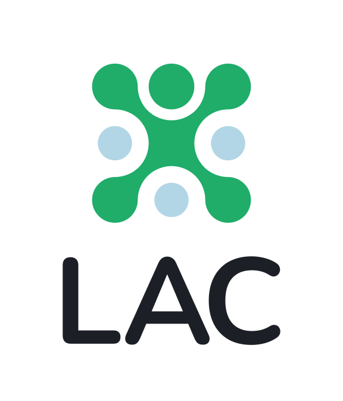
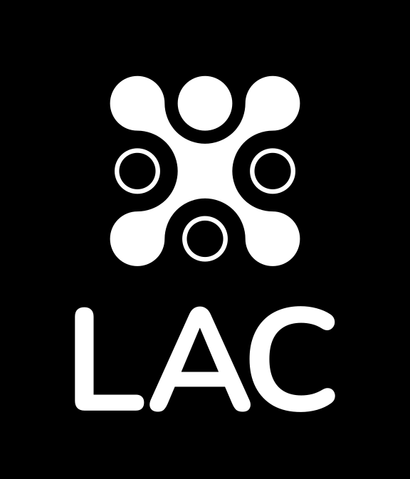
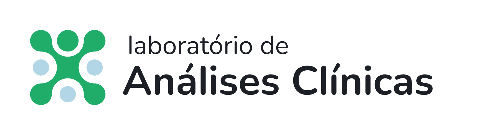
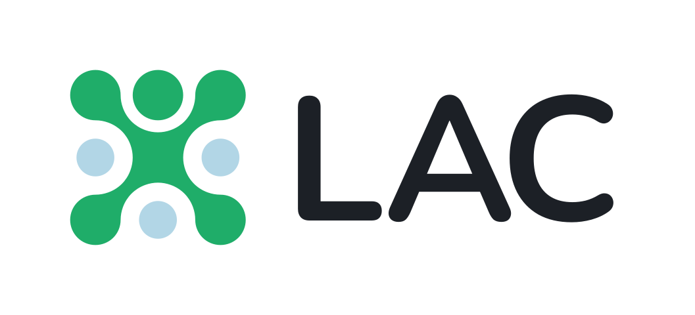
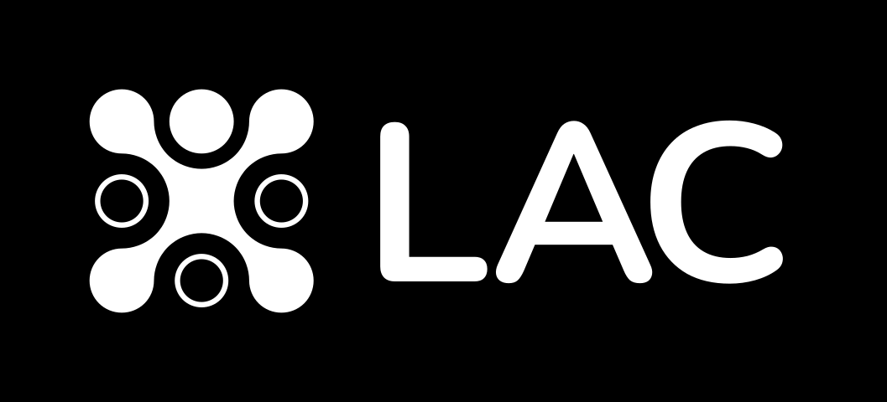
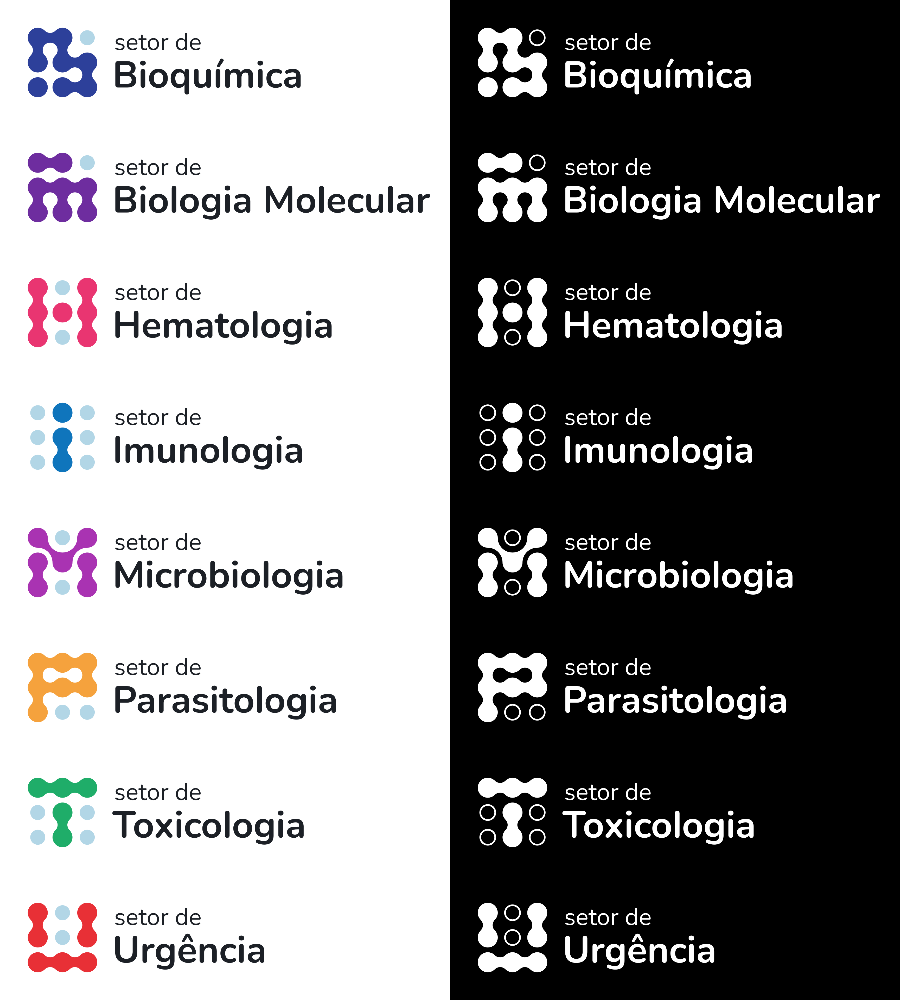

Laboratório de Análises Clínicas
Identidade visual para o Laboratório de Análises Clínicas do Hospital Universitário de Londrina.
Detalhes do Projeto
Projeto de identidade visual desenvolvido para o Laboratório de Análises Clínicas do Hospital Universitário de Londrina. O processo se deu durante período de estágio na Gráfica UEL.
A logo foi inspirada na aparência de uma placa de Pétri, utilizada em laboratório para o cultivo de culturas de micro-organismos. Além de uma "logo mãe", que representa o laboratório como um todo, foram requisitadas oito logos auxiliares para cada um de seus setores. A natureza do projeto exigiu uma solução modular: uma malha de nove pontos interconectados, que assumem diferentes configurações de acordo com o setor que representam, sendo que a logo principal assume a aparência de uma figura humana. Cada logo tem uma versão horizontal e vertical, em cores, escala de cinza, preto e branco — com a adição de abreviações da logo principal.
Galeria do Projeto





